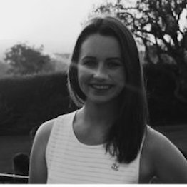
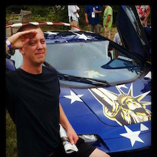
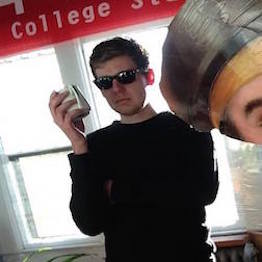
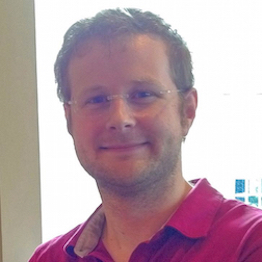

- Miranda Raymond
- Miranda grew up in the city of Seattle. She travelled South to Los Angeles for college and received her Bachelor’s degree in Biology. She moved to West Hollywood after graduation before eventually moving back to Seattle to study Front-end Web Development. She’s a strict follower of Ron Swanson’s Pyramid of Greatness.
- Rick Tesmond
- Similar to Lewis and Clark, Rick moved out west to attend college and seek adventure. After graduating from Whitman with a BA in psychology, fate steered him towards software development. Rick is on the campaign trail with Swanson to ensure all Americans have full access to breakfast food, minialist government, and a private hunting cabin.
- Thom Nienow
- Thom was born in Washington and has lived most of his life uncomfortable with speaking in the third person. After graduating from college he moved around a bit, did some dumb stuff, and ultimately returned home.
- George Ascherl
- George was born in New York and has lived in California, Arizona, Louisiana, and Hong Kong. He attended undergrad at Loyola Marymount University in Los Angeles where he studied Finance and Economics before attending law school. He now resides in Seattle and studies Front-End Web Development. Drink of choice: Lagavulin.